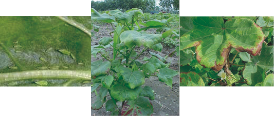

| Home |
| COTTON |
| 1. Leafhopper |
| 2. Cotton Aphid |
| 3. Thrips |
| 4. Whitefly |
| 5. Mealy Bug |
| 6. Red Cotton Bug |
| 7. Dusky Cotton Bug |
| 8. Tobacco Cutworm |
| 9. Leaf Roller |
| 10. Semiloopers |
| 11. Stem Weevil |
| 12. Shoot Weevil |
| 13. Surface Weevil |
| 14. Black Scale |
| 15. White Scale |
| 16. Yellow Stem Scale |
| Questions |
| Download Notes |
PESTS OF COTTON :: Major Pests :: Leafhopper
1. Leafhopper: Amrasca devastans (Cicadellidae: Hemiptera)
Distribution and status: Major pest in all cotton-growing region of India
Host range: Cotton, potato, brinjal, castor, bhendi, tomato, hollyhock and sunflower.
Damage symptoms: Both nymphs and adults suck the sap from the under surface of leaves, tender leaves turn yellow, leaf margins curl downwards and reddening sets in. In the case of severe infestation leaves get a bronze or brick red colour which is typical “hopper burn”. Crop growth retarded.
 |
||
Jassids |
Backward curling of leaves |
Hopper burn |
ETL: 50 nymphs / adults per 50 leaves or yellowing and curling from the middle to upper portion of the plants in 25 % of plants in the field
Bionomics: Adult green and wedge shaped, lay eggs singly within leaf veins. Incubation period 4-11 days. Nymph light green and translucent found between the veins of leaves on the under surface. Nymphal period 7-21 days. Nymphs moult five times. Life cycle is completed in 15-46 days. Eleven generations are known to occur in a year.
Management
- Early sowing and close spacing of cotton reduces pest infestation particularly if the rainfall is heavy.
- Setup light trap to monitor the broods of leaf hopper and to attract and kill.
- Release predators viz., Chrysopa carnea.
- Spray monocrotophos 36 WSC @ 1000 ml/ha and NSKE 5% @ 25 kg/ha or 750 ml endosulfan 35 EC in 1000 L of water per hectare.
- Use resistant varieties like MCU 3, MCU 5 and MCU 9.